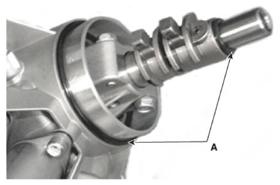
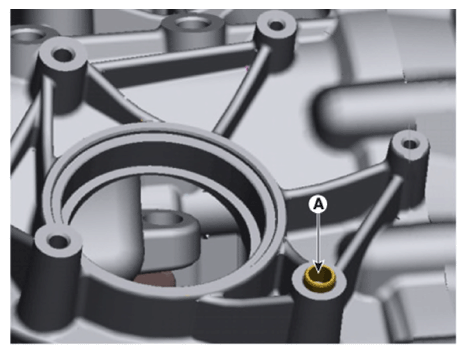
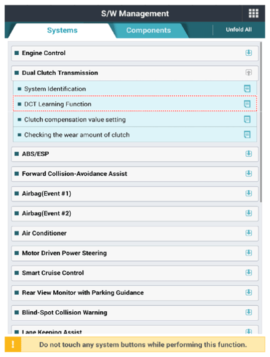

Repair Procedures: Installation
WARNING: This page is about a different variant/trim than selected.
- To install, reverse the removal procedure.
NOTE:
- Check the details below before installing the gear actuator assembly.
- Check that the gear actuator is placed in the "neutral" state.
- Check the assembled state of the O-rings (A).
 Courtesy of HYUNDAI MOTOR AMERICA
|
- Apply gear oil to the surface of O-rings.
- Check the assembled state of the dowel pins (A).
 Courtesy of HYUNDAI MOTOR AMERICA
|
- Perform the clutch touch point learning procedure using the diagnostic tool after replacing the clutch actuator assembly.
 Courtesy of HYUNDAI MOTOR AMERICA
|